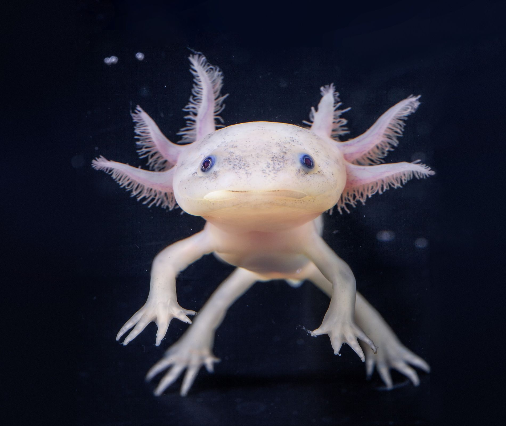

Descripción de su hábitat y estilo de vida:
Esta curiosa especie que cuyo nombre ajolote deriva de la palabra náhuatl Xolotl, nombre del dios azteca de la muerte, la resurrección y el juego. El axolote se encuentra únicamente en el complejo lacustre de Xochimilco (pronunciado Sochimilco), cercano a la ciudad de México, y difiere de la mayoría de las salamandras en que vive permanentemente en el agua. En casos extremadamente raros, el axolote madura y sale del agua, pero en la mayoría de los casos prefieren permanecer en el fondo de los lagos y canales de Xochimilco. Es un anfibio carnívoro cuya alimentación se compone de pequeños crustáceos, larvas de insectos, gusanos, babosas, caracoles, lombrices, renacuajos y algún pez.
Características: